스파르타는 왜 망했을까 ?
게시: 2019-01-03T06:30:00+09:00
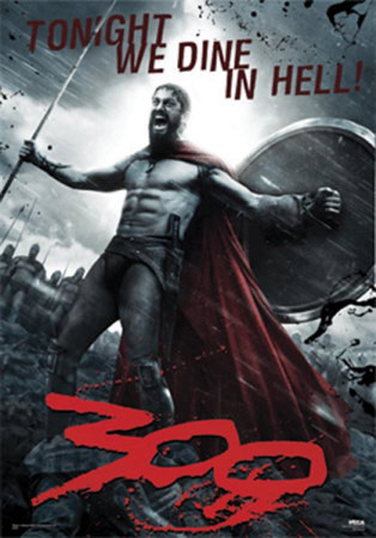
몇년 전 영화화되어 많은 패러디의 대상이 되었던 영화 300의 줄거리는 한마디로 '스파르타 인들의 전설적인 용맹'입니다. 물론 이 영화는 다큐멘터리가 아닌, 오락용으로 만들어진 영화에 불과하며, 많은 허구와 왜곡이 들어가 있습니다만, 기본적인 줄거리 자체는 역사적인 사실입니다. BC 480년 가을, 바닷가의 협로인 테르모필라에(Thermopylae)에서, 그리스 본토를 침공하기 위해 이 곳을 통과하려는 크세륵세스의 수십만 대군을, 수도 훨씬 적고 가난한 스파르타의 용사들이 상당 기간 저지하다가 결국 옥쇄했던 사건이 이 영화의 배경이지요.
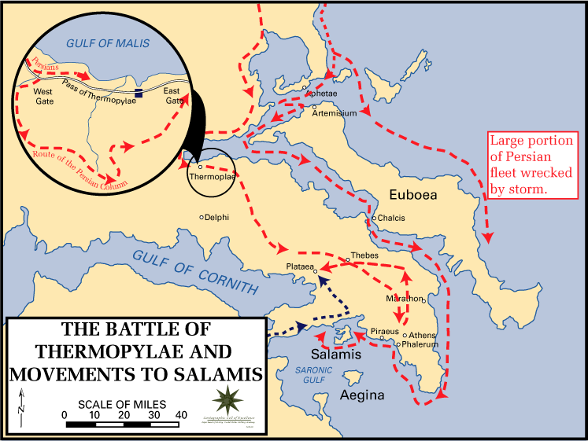
(테르모필라에를 스파르타가 꽉 틀어막는다고 해도, 바다길이 뚫려 있으니까 페르시아 군은 그리스 본토를 유린할 수 있다고요 ? 사실 그렇긴 했습니다. 그러나 당시의 원시적인 항해술 수준에서는, 바다로 대규모 원정군을 실어나른다는 것은 백만대군과 싸우는 것보다 더 위험한 일이었으니, 테르모필라에를 돌파하는 것이 꼭 필요했습니다.)
이 영화에서 그려진 스파르타 인들의 교육 방식이나 거친 생활상은 거의 대부분 다 사실입니다. 실은 그것보다 더 험악했습니다. 스파르타는 북한을 낙원으로 느껴지게 할 만큼 엄격한 군국주의 국가로서, 가난하고, 문화적으로 피폐했으며, 인권이나 개인의 행복 따위는 안드로메다로 보낸지 오래된 도시 국가였지요. 영화 속에서는, 곱추로 태어난 어느 스파르타 인이, 자신을 버린 조국에 배신감을 느끼고 페르시아 군에게 우회로를 알려주는 바람에 스파르타 군이 전멸을 하게 된 것으로 그려졌습니다. (실은 그 지방 농민이 상금을 노리고 알려주었지요.) 하지만 실제로 그렇게 곱추로 태어난 스파르타 인이 있었다면 그에게는 그런 배신을 할 만한 자격이 있다고 할 수 있었습니다. 스파르타는 나치 독일 못지 않은 인권 유린 국가로서, 갓 태어난 모든 아기는 국가에서 검사하여, 만약 불구가 있거나 허약해 보일 경우, 산 속 깊은 구덩이에 내다 버려 죽이는 것이 법제화 되어 있었습니다. 현대 기준으로 보면 천인공로한 야만 국가였지요.
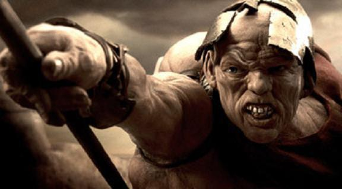
(배신자라고요 ? 아닙니다. 피해자였을 뿐입니다.)
그리스는 원래 남성 우월주의 마초 국가라서 어차피 여자들에게는 투표권이나 발언권, 재산 소유권 등은 물론 올림픽 관람권조차 모두 거부되었는데, 그나마 스파르타의 여성들에게는 재산권도 있고 또 각종 경기에도 참여할 수 있는 등, 다른 그리스 국가보다는 나은 지위를 누릴 수 있었습니다. 하지만 그런 스파르타에서도, 여성들에게 연애 같은 것은 절대 허용되지 않았습니다. 일단 기본적으로 결혼은 약탈혼이라서, 남자가 마음에 드는 여자를 친구들의 도움을 받아 납치한 뒤 머리를 빡빡 밀어버리고 감금한 뒤, 밤에만 (이제는 와이프가 된) 그 납치 여성을 찾아가는 식의 결혼 생활을 상당 기간 유지해야 했습니다.
심지어, (와이프의 의사와는 아무 상관없이) 와이프를 다른 남자에게 내어주기까지 했습니다. 스파르타에 있어서 여자란 튼튼한 아기를 낳기 위한 그릇에 불과했거든요. 따라서 훌륭한 다른 남성 시민의 씨를 받기 위해 와이프를 다른 남자에게 내어주고, 거기서 태어난 아기를 자신의 아기로서 키우는 것이 그다지 드문 일이 아니었습니다. 어차피 아기는 일정 나이가 되면 부모의 곁을 떠나 가혹한 공동 생활을 하며 거의 폭행과 학대에 가까운 공동 교육(agoge)을 받았으니, 아기가 꼭 자기 핏줄일 필요도 없었습니다.
영화 속에서 레오니다스 왕의 아내, 즉 여왕 고르고(Gorgo)가 원로원을 설득하여 남편에게 증원군을 보내기 위해 부패한 원로원 의원과 부적절한 관계를 맺는 장면이 나옵니다. 이런 일은 실제로는 일어나지 않았지만, 레오니다스가 돌아오지 못할 것이 뻔한 원정 길을 떠날 때, 그 아내인 고르고가 '내가 당신을 위해서 할 수 있는 것이 무엇일까요'라고 묻자, 레오니다스는 쿨하게 '훌륭한 남자와 결혼하여 튼튼한 아기를 낳으시오'라고 한마디 하고는 뒤도 돌아보지 않고 떠났다고 합니다. 최소한 조선 시대처럼 여자들이 정절을 지키거나 청상과부로 늙을 필요는 없었던 것이지요.
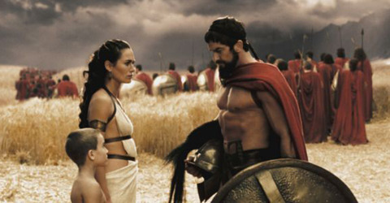
(부도덕한 일이라고요 ? 동성애가 고상한 취미로 인정되던 시절입니다. 뭐 꼭 나쁘다는 이야기가 아니라, 현대적인 가치관과는 많이 다르다 정도로 이해하시면 되겠습니다.)
남녀가 함께 식사를 하며 데이트를 한다는 것은, 젊은 미혼 남녀는 상상할 수도 없는 일이었고, 젊은 부부 사이에서 조차도 있을 수 없는 일이었습니다. 일단 남자들은 15명이 한 조를 이루어 모두 공동 식사(syssitia)를 해야 했으니까요. 어느 스파르타의 왕이 전쟁에서 승리를 거두고 귀환한 뒤, '오늘은 특별한 날이니 집에서 와이프와 함께 먹겠다'며 공동 식당에 사람을 보내 자기 몫의 식사를 자기 집으로 보내달라고 요청했다가 '개소리 하지 말라'며 면박을 당할 정도였습니다. 게다가 먹는 것도 맛없기로 유명한 '검은 국'에 부풀지 않은 보리 빵을 먹는 정도라서, 한마디로 정말 가난한 삶을 살았습니다. 테르모필라에 전투 1년 뒤인 BC. 479년, 스파르타가 이끈 연합군이 플라타에아 (Plataea) 전투에서 페르시아의 잔여 병력을 완전 격파합니다. 이때 스파르타의 왕인 파우사니아스 (Pausanias)는 페르시아 진영에서 페르시아 인들이 차려 놓은 산해진미의 식탁을 발견하고는 '이런 욕심쟁이들, 이런 것을 먹으면서도 우리의 보리 빵을 빼앗으려고 쳐들어왔단 말인가' 하고 한마디 할 정도였습니다.
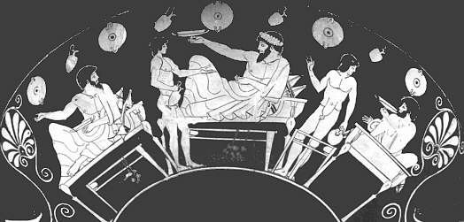
(전형적인 그리스의 만찬 모습입니다. 술잔이 납작한 것이 특징인데, 굳이 스파르타가 아니더라도 그리스 사람들의 식탁은 그다지 풍성한 편이 못 되었습니다.)
스파르타는 문화적으로나 경제적으로 무척 피폐한 나라였습니다. 일단 시민들은 절대 직업을 가져서는 안되었습니다. 즉, 스파르타 시민권을 가진 남자들은 100% 백수였습니다. 이들에게 직업의 자유가 주어지지 않은 것은 이들이 항상 신체를 단련하고 무술을 연마하여, 최강의 병사들이 되도록 하기 위함이었습니다. 이러다보니, 온나라의 살림살이는 투박하기 이를데 없었습니다. 가령 스파르타의 어느 왕이 외국을 방문했다가 어느 집에 들어가 대들보를 올려다보고는 '이 나라에는 네모난 모양으로 자라는 나무가 있는가 ?' 하고 물었다고 합니다. 스파르타의 집은, 왕궁조차도, 그냥 둥근 통나무를 그대로 대들보로 썼던 것이지요. 또 돈이라는 것이 사실상 존재하지 않았습니다. 당시 그리스를 포함한 동부 지중해는 은화를 매개체로 한 상업 활동이 활발했는데, 스파르타는 예외였습니다. 스파르타의 전설적인 입법가인 리쿠르구스 (Lycurgus)의 법에 의해, 스파르타에서는 은화는 못 만들게 했고, 오로지 무쇠 동전을, 그것도 뜨거울 때 식초에 담가 '고철 가격도 안 나가도록 만든' 가치없는 동전만을 쓰도록 했으므로, 상업 활동이 전혀 없었습니다. 상황이 이랬으므로, '펠로폰네소스 전쟁사'를 쓴 투키디데스(Thucydides)는 '먼 훗날 사람들이 스파르타의 유적을 파본 다면 스파르타가 전체 그리스를 호령하는 강대국이었다는 사실을 믿을 수 없을 것이다' 라고 그 시대에 이미 썼을 정도였지요.
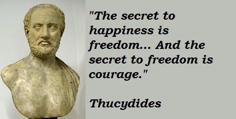
(투키디데스의 흉상 보다는 그 어록이 더 마음에 드네요. "행복의 요건은 자유고, 자유의 요건은 용기이다.")
이렇게 지독하게 살았으니 스파르타가 군사 강국이라는 것은 충분히 이해를 하겠습니다만, 이런 군사 강국이 대체 왜 망했을까요 ? 신무기가 개발되어 용기와 체력으로 승부하던 스파르타 인들의 전법이 더 이상 통하지 않게 되었던 것일까요 ?
한 나라가 쇠락하는데는 사실 한두 가지의 이유만 존재하는 것이 아닙니다. 보통 교과서에는 '그리스 도시 국가 간의 반목으로 인한 잦은 전쟁과 그에 따른 국력 고갈'을 이야기하지요. 맞는 말입니다. 하지만 전쟁이라면 그 전부터도 지치지도 않고 열심히 해왔던 것이 스파르타입니다. 또, 손바닥도 마주 쳐야 소리가 난다고, 스파르타와 전쟁을 하던 다른 도시 국가들, 즉 아테네나 테베, 아르고스 등도 전쟁에 시달리기는 마찬가지였습니다. 특히 스파르타가 결정적인 패배를 맛 본 BC. 371년, 레욱트라 (Leuctra) 전투의 상대는 테베 (Thebes) 군이었는데, 물론 테베 군의 지휘관이 당대의 군사 천재인 에파미논다스(Epaminondas) 이긴 했습니다만, 스파르타 군은 맥없이 무너지고 말았습니다. 물론 스파르타 군이 그리스 최강을 자랑하기는 했지만, 그렇다고 항상 이기기만 했던 것은 아니었습니다. 다만, 스파르타 군의 숫자가 더 많거나 적과 대등할 경우에는 항상 승리했었습니다. 또한, 스파르타의 엄격한 법에 따라, 전투에서 등을 보이고 도주하는 자는 모두 사형에 처하게 되어 있었으므로 스파르타 군이 보기 흉하게 패퇴하여 방패를 버리고 도주하는 경우는 절대 없었는데, 이 전투에서 스파르타 군은 전사한 자신들의 왕 클레옴브로투스(Cleombrotus)의 시신을 내버려두고 걸음아 날 살려라 도망을 치는 추태를 보였습니다. 그러나 이때 스파르타는 워낙 시민의 수가 적었으므로, 이들을 다 처형할 경우 국가가 끝장 났으므로 이 도망자 처형에 대한 법률을 시행하지 않는 수준에 이르렀습니다.
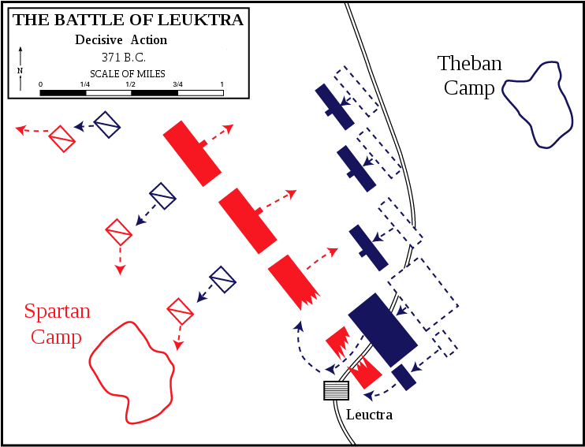
(레욱트라 전투에서, 테베의 제갈공명 에파미논다스는 당시 그리스 중장 보병 전술의 약점을 교묘히 이용한 사선 방식의 전열을 이용하여 더 적은 병력으로도 무적이라는 스파르타 군을 격파해내는 기염을 토합니다. 그러나 이 전투에는 또다른 비밀이 있었지요.)
영화 300을 찍었던 테르모필라에 전투와 이 레욱트라 전투 사이의 불과 100년 사이에, 스파르타에 대체 무슨 일이 발생했길래 이렇게 되었을까요 ?
일단 학자들이 생각하는 가장 큰 이유는 스파르타의 인구 감소입니다. 가령 BC. 479년, 플라타에아 (Plataea)로 진격했던 스파르타 인들의 수는 약 5천명이었습니다. '페르시아 전쟁사'를 썼던 헤로도투스의 계산에 따르면, 당시 전체 스파르타의 성인 남자 인구는 8천 정도였지요. 그러나 100년 뒤 레욱트라 전투에서의 스파르타 인들의 숫자는 '영웅전'으로 유명한 플루타르코스 (Plutarchos)에 의하면 고작 700명에 불과했습니다. 동시대 역사가인 크세노폰(Xenophon)의 계산에 따르면 약 1천명 수준이었지요. 유명한 철학자 아리스토텔레스는 '스파르타는 인구 부족으로 망했다'라고 말할 정도였지요.
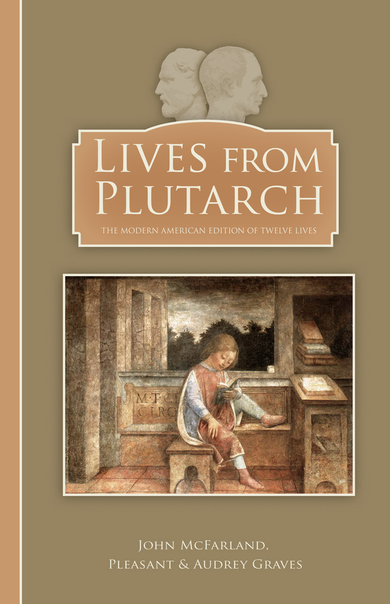
(제가 중고등학교 때 플루타르크 영웅전을 읽고 흠뻑 빠져서, 소년 보수가 되었더랬지요. 아마 당시에도 인터넷이라는 것이 있었다면 저는 아마 일베의 열성회원이 되었을지도 모릅니다.)
하지만 그 사이에 스파르타 인구가 그렇게 급격히 줄어든 것에는 뭔가 이유가 있어야 합니다. 아무리 그 사이에 전쟁이 많았다고 하더라도, 불과 100년 사이에 인구가 거의 1/8 수준으로 떨어진 것은 흑사병이 돌아도 불가능한 일입니다. 특히 스파르타처럼 '건강한 아이를 많이 낳는 것이 애국'이라고 생각하는 나라일 수록 더욱 그렇습니다. 적어도 스파르타에서는 사교육비가 많이 들지 않았으니까, 국민들이 아이 낳는 것을 꺼릴 이유가 없었지요. 대체 스파르타에 뭐 운석이 떨어졌거나 조류 독감이라도 번진 것이었을까요 ?
실은 운석이나 조류 독감보다 더 무서운 것이 외부로부터 스파르타에 들어오긴 했습니다. 바로 돈이었습니다.
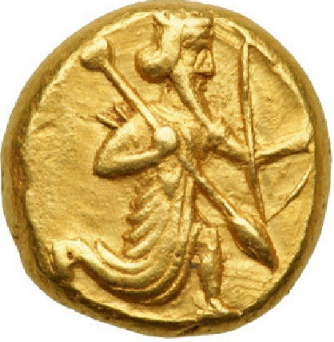
(특히 페르시아의 다릭 Daric 금화가 그리스 전체를 망하게 했다고 할 수 있습니다. 영화 300만 보면 최후의 승자가 그리스처럼 보이지만, 사실 전체적인 그림을 놓고 보면 결국 페르시아가 전체 그리스를 쥐고 놀았다고 할 수 있습니다. 물론 마케도니아에게 둘다 망하긴 했지만 말입니다.)
위에서 언급한 것처럼, 원래 스파르타 인들은 100% 백수에 돈이라고는 찾아볼 수 없는 나라였습니다. 사실 이 점은 제가 존경하는 신필 김용 선생의 무협지와도 상통하는 내용입니다. 대체 무림의 고수들은 직업도 없는데 어디서 돈이 나서 먹고 마시고 하는 걸까요 ? 아무리 스파르타 사람들이 가난하게 살았다고 해도, 매일 먹는 보리 빵이나 검은 국, 영화 300 찍을 때 입었던 빤스 같은 것들은 필요했습니다. 그리고 그런 물건들도 하늘에서 뚝 떨어지는 것이 아니었고 누군가는 만들어내야 하는 것이었습니다. 그런 활동을 전담하는 사람들이 있었으니 이들을 헬로트 (helot)라고 불렀습니다.
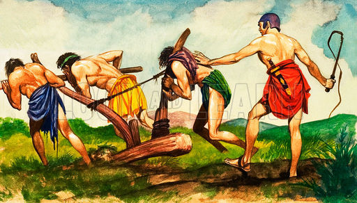
(이놈의 세상은 동화나 무협지가 아닌지라, 누군가 영웅 놀이를 하자면 다른 누군가는 이렇게 고된 노동을 해서 그들을 먹여살려야 합니다.)
원래 스파르타 인들은 마케도니아 쪽에서 내려온 도리아(Doria) 인이었고, 헬로트들은 라코니아 (Laconia) 지방에 살던 원주민이었습니다. 이 원주민들은 메세니아 (Messenia)라는 국가를 이루어 살고 있었는데, 결국 스파르타 인들에게 패배하고 그들의 노예...라기보다는 농노 같은 예속 신분이 되었습니다. 리쿠르구스의 개혁 때, 이들의 토지는 9천개의 일정한 크기로 분할되어 순수 스파르타 시민들, 즉 Spartiates들에게 주어졌고, 그 토지 (이런 영지를 kleros라고 불렀습니다)에서 헬로트들이 농사를 지어다 바치는 것이 스파르타 인들의 경제적 바탕이 되었습니다. 그러나 스파르타에는 이렇게 순수 시민권자들, 즉 Spartiates과 그 농노인 헬로트들만 있는 것도 아니었습니다. 스파르타 주변에는 100여개 마을이 있었고, 여기에는 자유민들, 즉 Perioekoi들이 살고 있었습니다. 이들도 순수 스파르타 시민들처럼 도리아 인이었는데, 이들은 위에서 언급한 엄격한 스파르타 식 생활을 하는 것이 아니라 그냥 평범한 경제 생활을 영위하고 있었습니다. 이 페리오이코이들은 비록 순수 시민권자는 아니더라도, 전장에 나갈 때는 스파르타 군으로 분류되었습니다. 원래 페르시아 전쟁 때까지만 해도 스파르티아테스들과 페리오이코이는 각각 서로 다른 부대로 편성되어 싸웠지만, 펠로폰네소스 전쟁 때는 이미 하나의 부대 속에 서로 섞여 전우로서 싸웠지요. 전에 언급했던 스파르타 출신 용병 대장 클레아르쿠스(Clearchus)도 사실 스파르티아테스 출신이 아니라 페리오이코이 출신이었습니다.
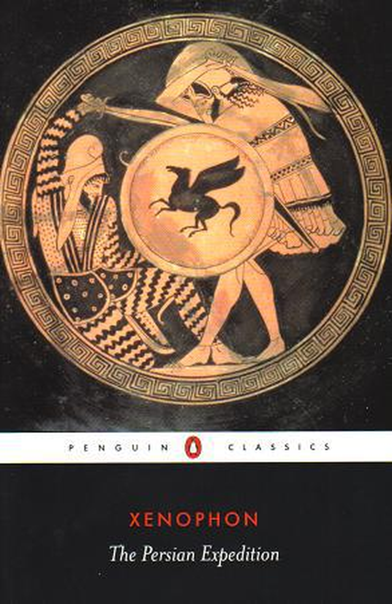
(클레아르쿠스에 대해서는 크세노폰의 아나바시스(Ananbasis) 에 자세히 나옵니다. 저도 저 펭귄 클래식으로 읽었습니다.)
이들의 경제 생활의 기초 구조는 평등주의였습니다. 원래 스파르타의 성인 시민들을 부를 때 "homoioi"라는 말을 썼는데, 이는 같은 신분이라는 뜻이었습니다. 즉, 모든 성인 스파르타 시민은 경제적으로 평등해야 했습니다. 모두가 같은 크기의 영지를 가지고 있었고, 더 열심히 한다고 해서 경제적으로 더 부유해지는 것은 아니었고, 또 특별히 부를 모으는 것이 바람직한 일이라고 생각하지도 않았습니다. 그러나 공산주의는 아니었기 때문에, 아무래도 조금씩 빈부의 차이가 있기는 했습니다. 가령 어떤 가난한 집안의 스파르타 소녀가 시집을 갈 때, '지참금으로 무엇을 가져가는가'라는 질문을 받자, '제 아버지의 상식'이라는 대답을 했다고 하는데, 여기서 알 수 있는 것은 스파르타 시민들 사이에서도 빈부의 차이가 있기는 했다는 것입니다.
스파르타 인들은 철학적으로 훈련을 받았기 때문에 물질적 부에 대해서 초연할 수 있었을까요 ? 글쎄요, 확실한 것은 다른 도시 국가의 화려한 생활로부터 격리되었다는 점이 스파르타 인들의 검소함의 큰 원인이었다는 것입니다. 오늘날 북한 사람들과 스파르타 인들이 닮은 점 중 하나가, 외부 세계로부터 철저히 격리되어 있다는 점이었습니다. 이들은 국가로부터 뭔가 임무를 부여받고 떠나는 것이 아니라면, 국경 밖으로 나가는 것이 금지 되어 있었습니다. 그래서인지, 그렇게 용맹함과 고결함으로 칭송이 자자했던 스파르타 인들도, 소수 인원끼리 해외로 나오기만 하면 흥청망청 향락에 빠져서 나라 망신을 시키는 경우가 아주 흔했습니다. 하지만 이런 것들은 일시적, 개인적인 일이라서 스파르타의 근간을 흔들 정도는 아니었습니다. 조금씩 스파르타 인들을 오염시키던 외국의 돈이 스파르타로 물밀 듯이 몰려들게 된 사건이 있었으니, 그것이 바로 펠로폰네소스 전쟁이었습니다.
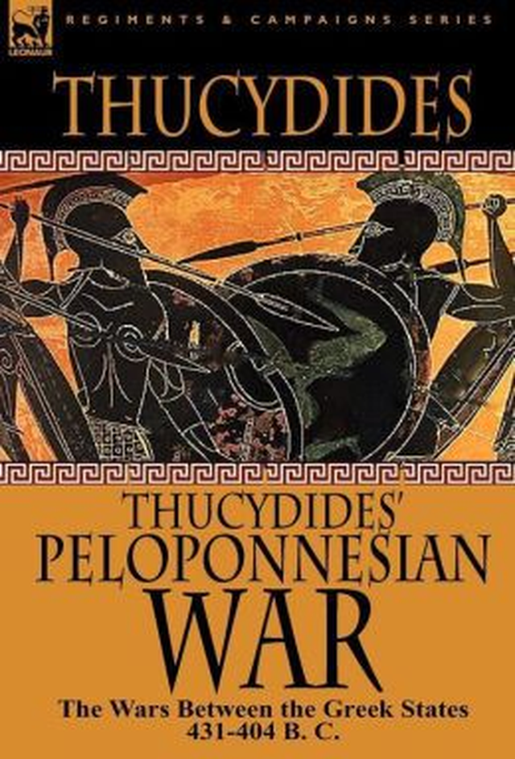
(당연히 이것도 읽었지요. 정말 재미있었는데, 다만 자주 나오는 연설 부분들이 너무 길더군요. 이 당시 아테네 사람들은 대중 선동정치가, 즉 데마고그(demagogue)들에게 휘둘리고 있는 상태였고, 투키디데스도 그런 민회에서 투표 결과 추방당한 몸이었기 때문에, 소위 말하는 민주주의라는 것에 대해 매우 부정적인 시각으로 씌여져 있습니다. 제가 젊은 시절 보수파였던 것은 다 그리스 로마 고전을 탐독한 덕분이었어요.)
펠로폰네소스 전쟁은 아시다시피 스파르타와 아테네가 그리스의 패권을 두고 벌인 전쟁인데, 전쟁의 양상은 다소 바보스럽게 보일 정도로 단순했습니다. 강력한 육군을 가진 스파르타가 펠로폰네소스 반도의 동맹군들을 이끌고 아테네로 쳐들어가면, 아테네는 강력한 성벽 뒤에 숨어서 응전하지 않았습니다. 당시는 워낙 고대라서, 충차나 운제 같은 공성용 병기도 아직 만들어지기 전이라서, 이렇게 농성하는 아테네 군을 공략할 방법이 마땅치 않았습니다. 스파르타 및 그 동맹군이 이렇게 허송세월하는 동안, 아테네 군은 강력한 해군력을 이용하여, 바다를 통해 펠로폰네소스 반도의 해안, 즉 스파르타의 앞마당에 상륙하여 여기저기를 불지르고 파괴했습니다. 스파르타 인들은 몰라도 그 동맹군들은 원래 직업이 대부분 농부였으므로, 농번기가 되면 결국 군대를 철수시켜야 했지요.
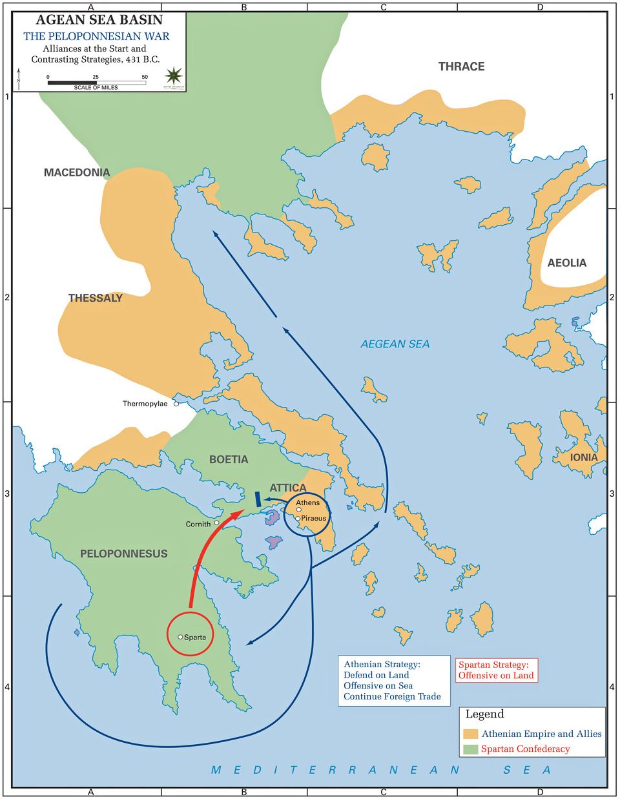
(이 지도가 보여주는 양상이 초기 펠로폰네소스 전쟁의 전형적인 모습입니다. 아테네와 그 외항인 피라에우스 항구 사이의 긴 회랑은 긴 장벽으로 완전 요새화되어 있어서, 제해권이 없다면 아테네를 제압하는 것은 불가능했습니다. 특히 아테네의 곡물 수입로인 헬레스폰트 해협, 즉 현재의 이스탄불이 있는 터키 지방의 확보가 매우 중요했지요. 그래서 전쟁은 그쪽 지방에서도 치열하게 벌어집니다. )
이런 식으로 몇년이 무의미하게 흘러가자, 스파르타도 아테네를 제대로 공략하기 위해서는 결국 해군이 필요하다는 것을 인정하게 되었습니다. 그러나 중산층 집안의 시민들이 각자의 갑옷과 방패 등 무장은 물론, 먹을 것까지 각자 부담했던 육군과는 달리, 해군은 돈이 무진장 많이 들어갔습니다. 아테네는 인근에서 개발된 은광을 이용하여 당시의 주력 군함인 3단 노선(trireme)들을 많이 건조했지만, 일부 부자들이 돈을 내어 개인 부담으로 건조된 군함들도 많았습니다. 게다가 이런 3단 노선을 움직이기 위해서는 많은 노젓는 노수들이 필요했습니다. 이런 노수들은 아테네의 경우 가진 것이 없어서 중장 보병 (hoplites)으로서의 무장을 갖출 수 없는 빈민들이 주로 맡다가, 나중에는 용병으로 채워지게 되었는데, 이들에게는 모두 적게나마 급료가 주어져야 했습니다. 또 거친 바다에 나가면 노나 밧줄 등의 소모품도 무척 많이 필요했습니다. 한마디로, 스파르타의 경제력으로는 도저히 해군 건설이 불가능했습니다.
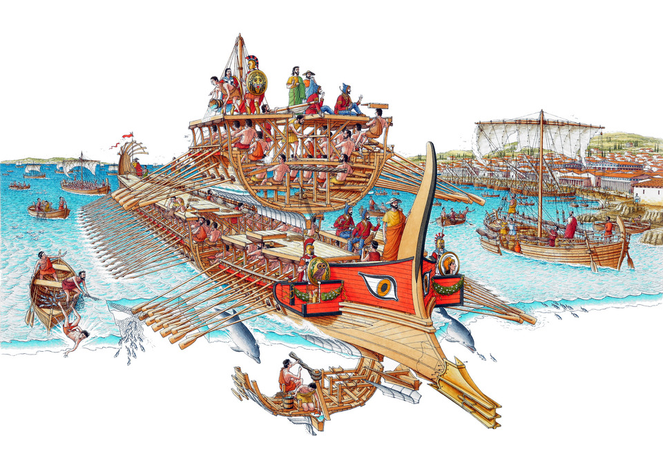
(당시 그리스의 주력 군함이던 3단 노선 trireme의 구조입니다. 선체 크기에 비해 승무원 수가 너무 많았으므로, 밤에 잘 때나 식사할 때는 바닷가에 정박해야 했고, 또 선체가 가벼워야 했으므로 그만큼 선체 강도가 약하여, 먼 바다를 항해할 때는 사용하기가 곤란했습니다.)
결국 스파르타는 동맹국들로부터 강제로 분담금을 거두어 해군을 건설하게 되었습니다. 이렇게 분담금을 거두고 필요한 자재를 구매하고, 노수들을 고용하고 급료를 지불하는 행위는 사실 스파르타 인들에게는 그다지 어울리는 일이 아니었습니다. 아니나 다를까, 이런 과정에서 많은 스파르타 인이 부패에 눈을 뜨게 되었습니다. 특히 펠로폰네소스 전쟁 동안, 스파르타는 그리스 각지의 펠로폰네소스 동맹국들을 지휘 감독하기 위해 '장군' 1명씩을 여기저기로 파견하는 경우가 많았는데, 이들 중 상당수가 현지에서 뇌물을 받아먹는 일이 많아졌습니다. 이 모든 것은 스파르타의 명성을 땅에 떨어뜨리는 일이었지요. 특히 펠로폰네소스 전쟁의 대전환점이었던, 아테네의 시칠리아 원정군을 궤멸시킨 시라쿠사 공방전의 총지휘관이었던 스파르타 인 길리푸스 (Gylippus) 같은 거물급조차도, 동맹국에서 스파르타 본국으로 은화 궤짝을 호송하다가 일부를 착복한 것이 들통나서 외국으로 도주하는 신세가 되고 말아서, 많은 사람들에게 충격을 주었습니다.
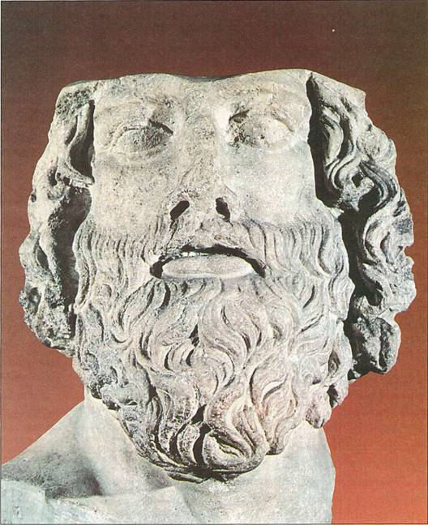
(30년 묵은 전쟁을 끝낸 스파르타의 명장이자 정치가인 리산드로스의 두상입니다.)
이런 부패는 그나마 작은 문제에 속했습니다. 더 큰 문제는 돈 바로 그 자체였습니다. 돈이라는 것이 얼마나 좋은 것인지 눈을 뜨게 된 스파르타 인들이 부의 축적에 나선 것이 스파르타의 몰락을 부추긴 가장 큰 원인이었습니다. 위에서 언급한 것처럼 비록 작은 빈부 차이는 있었으나, 기본적으로 스파르타 인들은 모두 평등한 경제력을 가지고 있었습니다. 그런데, 스파르타에 돈 바람이 불면서 결국에는 리쿠르구스 시절부터 내려온 영지(kleros)를 팔아치우는 시민들이 부쩍 늘어났습니다. 원래 인간은 평등하지가 않은 것이 사실이긴 합니다. 사람들마다 재주와 능력치가 달라서, 어떤 사람들은 돈 버는 재주가 남다를 수 밖에 없었는데, 그런 소수인들에게 스파르타의 전통적인 영지가 집중되는 것은 한 순간의 일이었습니다. 영지를 팔아치운 사람들이 그 돈으로 무엇을 했는지는 잘 모르겠습니다만, 확실한 것은 영지를 팔아치운 대부분의 시민들은 몰락의 길을 걸었다는 것입니다. 이렇게 몰락한 시민들은 공동 식사 (syssitia)에 필요한 자기 몫의 비용조차 낼 수가 없었고, 또 자신의 아이를 공동 교육 (agoge) 시키는데 들어가는 비용도 낼 수 없었습니다. 이는 곧바로 시민권을 가진 순수 스파르타 인, 즉 Spartiates의 지위를 잃는 것을 뜻했습니다. 즉, 스파르타에 전례없던 빈부 격차가 생기면서 스파르타의 전통적 시민 제도가 무너져 내렸다는 것입니다.
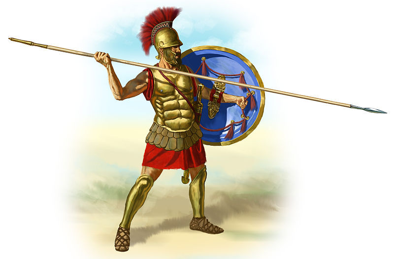
(그리스 군의 기본 구성 요소는 이 중장보병 hoplites였습니다. 이런 중장보병의 무장은 모두 자비로 마련해야 했는데, 상당히 고가의 물건이었으므로 오직 중산층만이 이런 무장을 감당할 수 있었고, 한 도시 국가의 국력은 도시에 얼마나 많은 시민들이 이렇게 스스로 중장보병의 무장을 갖출 수 있는 경제력을 갖추고 있느냐에 달려 있었습니다. 그런데 중산층이 몰락하여 빈민이 되었다면, 그만큼 도시가 약해졌다고 할 수 있지요.)
이렇게 몰락한 시민들이 어떤 지위를 가졌는지는 잘 알려져 있지 않은데, 아마도 자유인, 즉 페리오이코이 정도가 되지 않았을까 합니다. 그러나 확실한 것은, 이렇게 경제적으로 쇠락하여 시민권을 잃은 자들은 자신의 조국 스파르타에 대해 무척이나 분한 마음을 가질 수 밖에 없었다는 것이지요.
원래 스파르타에는 웅장한 성벽이 없었습니다. 그 이유는 누군가 도시 방어에 대해 묻자, 스파르타의 전설적인 입법가인 리쿠르구스가 '벽돌로 쌓은 벽보다 사람으로 쌓은 벽이 더 튼튼하다'라고 말했기 때문이라고 합니다. 실제로 어떤 아테네 인이 스파르타 인을 놀리며 '우리들은 에리다노스 (Eridanos, 아테네 인근의 강) 강가에서 너희들을 여러번 무찔렀다' 라고 말하자, 그 스파르타 인은 묵묵히 이렇게 대꾸했다고 합니다. '우리들은 에우로타스 (Eurotas, 스파르타 인근의 강) 강가에서 너희들을 무찌른 적이 한번도 없군.'
또, 리쿠르구스는 방어 전략을 묻는 사람에 대해 이렇게 대답했습니다.
"가난하게 살고, 남보다 더 많이 가지려 하지 말라."
이는 스파르타의 안보에 있어, 경제적 평등이 얼마나 중요한 지를 가르치는 말이었습니다. 그러나 후손들이 돈에 눈을 뜨게 되면서, 이 모든 것이 물거품이 되고 말았지요.
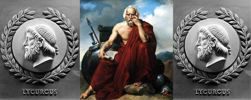
(리쿠르구스의 법제가 꼭 이상적인 것은 아니지요. 어차피 펠로폰네소스 전쟁을 거치면서 리쿠르구스 체제의 한계가 보였기 때문에 스파르타도 어쩔 수 없이 변화한 것입니다. 사실 펠로폰네소스 전쟁이 스파르타의 승리로 돌아간 것은 알고 보면 결국 페르시아가 스파르타를 금전적으로 후원해주었기 때문에 가능했던 일이었습니다. 스파르타의 체제가 우수했기 때문이 아니지요. 그 한계는 결국 나중에 '안탈키다스의 평화'라는, 스파르타가 페르시아에게 소아시아 지역의 그리스 도시들을 팔아넘기는 결과를 낳게 합니다.)
이런 이유로 인해, BC. 479년, 플라타에아 (Plataea)로 진격했던 Spartiates 5천명이 BC. 371년, 레욱트라 (Leuctra) 전투에서는 불과 7백명으로 줄어든 것입니다. 그러나 여전히 스파르타의 병력은 훨씬 많았습니다. 레욱트라 전투에서, 동맹군을 합하면 스파르타 측은 무려 1만명의 병력을 가지고 있었고, 그에 대항하는 테베 군은 6천~7천에 불과했습니다. 하지만 이미 시민 공동체로서의 애국심이 사라진 군대는 백년 전 플라타에아 전투에 참전했던 그 스파르타 군과는 질적으로 너무나 달랐습니다. 이날의 패전 이후, 스파르타는 지속적인 쇠락을 거듭하며 평범한 시골 마을로 변모해버렸습니다. 사실 알고 보면, 스파르타의 패망은 레욱트라 전투의 결과 때문이 아닙니다. 레욱트라 전투는 원인이 아니라 결과였고, 그 원인은 스파르타에서 심각해진 빈부 격차였던 것입니다.
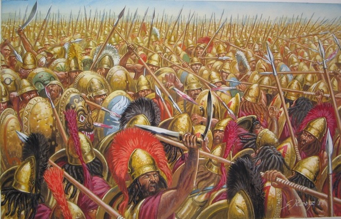
(당시 그리스 군 전법은 매우 단순하여, 중장보병의 밀집 대형, 즉 phalanx들끼리의 충돌에서 어느 쪽이 체력적으로 또 정신적으로 더 우세한가를 겨루는 것이었습니다. 어떻게 보면 미식 축구의 스크럼 싸움과 비슷했지요.)
세상에 빈부 격차가 없을 수는 없고, 또 적절한 빈부 격차는 경제에 활력의 요소가 될 수 있습니다. 원래 보수 쪽에서 중시하는 대로 경제적 자유를 그대로 풀어놓아 두면, 반드시 빈부 격차는 심해질 수 밖에 없습니다. 위에서도 말했듯이 사람들의 능력은 평등하지 않으니까요. 하지만 그런 약육강식의 경제 활동 속에서도 빈부 격차를 줄이려는 어느 정도의 조치는 국가 안보를 위해서라도 반드시 꼭 필요하다고 봅니다.
PS.
위에서 언급한 에리다노스 강과 에우로타스 강 이야기처럼, 스파르타 인들은 짧고도 강렬한 경구를 무척이나 사랑했습니다. 이런 촌철살인의 짧은 경구를 즐겨 사용하는 것을 라코닉 (laconic, 스파르타가 있던 지방의 이름이 라코니아) 하다고 표현하지요. 가령 30년에 걸친 펠로폰네소스 전쟁을 끝장 낸 스파르타의 장군 리산드로스 (Lysandros)가 아테네를 정복한 뒤 본국의 장로들 (Ephor)에게 보낸 편지에는 딱 한줄, '아테네를 정복했음' 이라고 적혀 있었습니다. 그러나 원로원에서는 '말이 너무 길다, 그냥 "정복"이라고만 썼으면 충분했을 것을' 이라고 한탄했을 정도였지요. 하지만 제 생각에, 이런 라코닉한 표현 중에 최고의 것은 스파르타의 몰락 이후에 나왔습니다. 바로 다음의 경우였지요.
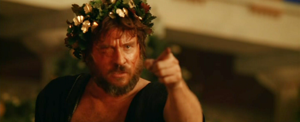
(영화 알렉산더에서 발 킬머가 열연했던 마케도니아의 필리포스 2세입니다. 실제로도 그는 애꾸눈에 광폭한 사내였다고 하지요.)
알렉산드로스 대왕의 아버지인 마케도니아의 필립 2세가 스파르타에게 항복을 요구하면서 "만약 내가 라코니아에 들어간다면 스파르타를 평지로 갈아 없애 버리겠다" 라고 협박하는 편지를 보냈습니다. 이 편지에 대해 스파르타 인들이 보낸 답장에는 단 한 단어, "αἴκα (If, 만약에 말이지)" 이라는 단어만 씌여 있었다고 합니다. 이것을 읽은 필립 2세는 스파르타 정복을 포기했고, 훗날 알렉산드로스 대왕도 스파르타에는 손을 대지 않았다고 합니다.